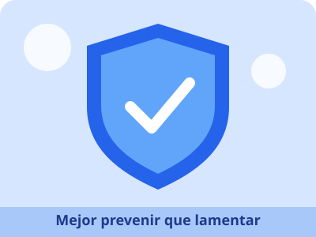

🏠 Inicio | 💚 Autocuidado | 🛡️ Prevención | 🌈 Derechos | 📚 Fuentes confiables
🛡️ Prevención: mejor prevenir que lamentar

¿Qué es prevenir?
Prevenir es actuar a tiempo para evitar un problema antes de que ocurra. Cuando conocemos los riesgos, podemos tomar mejores decisiones y protegernos a nosotros mismos y a quienes nos rodean.
Un dato importante
Según la Organización Panamericana de la Salud (OPS) y la OMS, cada año mueren más de 1,2 millones de adolescentes en el mundo por causas que, en su mayor parte, podrían evitarse. Por eso la información y la prevención son tan importantes.
Riesgos y cómo prevenirlos
- Accidentes y tránsito: usar casco y cinturón de seguridad, respetar las señales y no distraerse con el celular al cruzar la calle.
- Violencia, acoso escolar y ciberacoso: no compartir contraseñas, no reenviar fotos ni mensajes que humillen a alguien, bloquear y reportar a quien te moleste, y contárselo a un adulto de confianza.
- Alcohol, tabaco y otras drogas: informarte con fuentes confiables, aprender a decir «no» y pedir ayuda si tú o alguien cercano tiene dificultades.
- Enfermedades: mantener las vacunas al día, lavarte las manos y acudir al centro de salud ante cualquier malestar.
- Salud sexual y reproductiva: los adolescentes tienen derecho a recibir información veraz y atención en los servicios de salud. Habla con tus padres, un docente o personal de salud, y recuerda que nadie puede obligarte a hacer algo que no quieres.
¿A quién puedo acudir?
- A tu familia o a una persona adulta de confianza.
- Al DECE (Departamento de Consejería Estudiantil) y a los docentes de tu colegio.
- Al centro de salud más cercano del Ministerio de Salud Pública.
- En una emergencia: ECU 911.
Una medida básica

Lavarse las manos ayuda a prevenir enfermedades. Imagen: Wikimedia Commons (autor y licencia en el enlace).
Fuentes consultadas en esta página
- OPS – Cada año fallecen más de 1,2 millones de adolescentes por causas que, en su mayor parte, podrían evitarse
- OMS – Ha llegado el momento de invertir en los adolescentes
- Ministerio de Salud Pública del Ecuador – servicios de salud y programas para adolescentes.
Página creada por Wilmer Parco · Proyecto Interdisciplinario